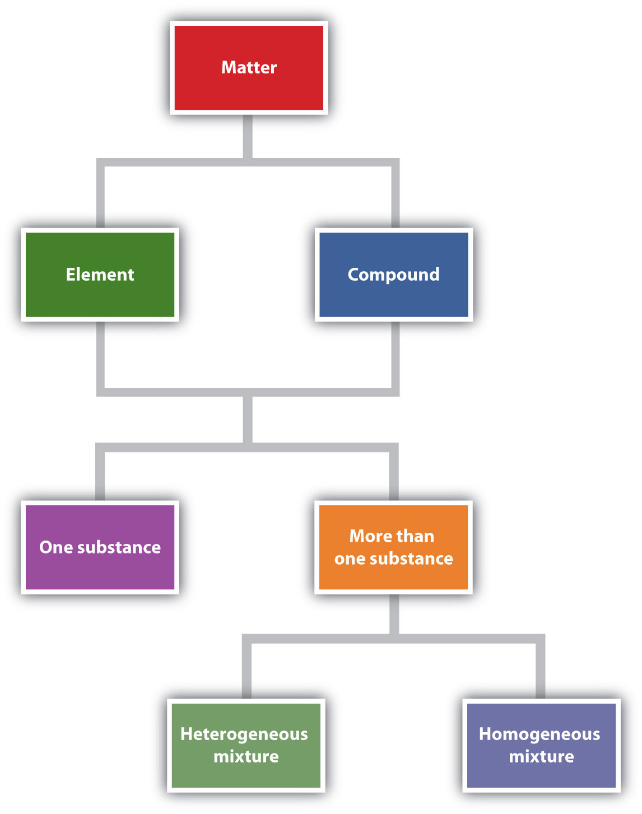

If you are reading these words, you are likely starting a chemistry course. Get ready for a fantastic journey through a world of wonder, delight, and knowledge. One of the themes of this book is “chemistry is everywhere,” and indeed it is; you would not be alive if it weren’t for chemistry because your body is a big chemical machine. If you don’t believe it, don’t worry. Every chapter in this book contains examples that will show you how chemistry is, in fact, everywhere. So enjoy the ride—and enjoy chemistry.
What is chemistry? Simply put, chemistryThe study of the interactions of matter with other matter and with energy. is the study of the interactions of matter with other matter and with energy. This seems straightforward enough. However, the definition of chemistry includes a wide range of topics that must be understood to gain a mastery of the topic or even take additional courses in chemistry. In this book, we will lay the foundations of chemistry in a topic-by-topic fashion to provide you with the background you need to successfully understand chemistry.
The definition of chemistry—the study of the interactions of matter with other matter and with energy—uses some terms that should also be defined. We start the study of chemistry by defining some basic terms.
MatterAnything that has mass and takes up space. is anything that has mass and takes up space. A book is matter, a computer is matter, food is matter, and dirt in the ground is matter. Sometimes matter may be difficult to identify. For example, air is matter, but because it is so thin compared to other matter (e.g., a book, a computer, food, and dirt), we sometimes forget that air has mass and takes up space. Things that are not matter include thoughts, ideas, emotions, and hopes.
Which of the following is matter and not matter?
Solution
Test Yourself
Which of the following is matter and not matter?
Answer
To understand matter and how it changes, we need to be able to describe matter. There are two basic ways to describe matter: physical properties and chemical properties. Physical propertiesA characteristic that describes matter as it exists. are characteristics that describe matter as it exists. Some of many physical characteristics of matter are shape, color, size, and temperature. An important physical property is the phase (or state) of matter. The three fundamental phases of matter are solid, liquid, and gas (see Figure 1.1 "The Phases of Matter").
Chemical propertiesA characteristic that describes how matter changes form in the presence of other matter. are characteristics of matter that describe how matter changes form in the presence of other matter. Does a sample of matter burn? Burning is a chemical property. Does it behave violently when put in water? This reaction is a chemical property as well (Figure 1.2 "Chemical Properties"). In the following chapters, we will see how descriptions of physical and chemical properties are important aspects of chemistry.
If matter always stayed the same, chemistry would be rather boring. Fortunately, a major part of chemistry involves change. A physical changeA change that occurs when a sample of matter changes one or more of its physical properties. occurs when a sample of matter changes one or more of its physical properties. For example, a solid may melt (Figure 1.3 "Physical Changes"), or alcohol in a thermometer may change volume as the temperature changes. A physical change does not affect the chemical composition of matter.
A chemical changeThe process of demonstrating a chemical property. is the process of demonstrating a chemical property, such as the burning match in Figure 1.2 "Chemical Properties". As the matter in the match burns, its chemical composition changes, and new forms of matter with new physical properties are created. Note that chemical changes are frequently accompanied by physical changes, as the new matter will likely have different physical properties from the original matter.
Describe each process as a physical change or a chemical change.
Solution
Test Yourself
Identify each process as a physical change or a chemical change.
Answers
A sample of matter that has the same physical and chemical properties throughout is called a substanceMatter that has the same physical and chemical properties throughout.. Sometimes the phrase pure substance is used, but the word pure isn’t needed. The definition of the term substance is an example of how chemistry has a specific definition for a word that is used in everyday language with a different, vaguer definition. Here, we will use the term substance with its strict chemical definition.
Chemistry recognizes two different types of substances: elements and compounds. An elementA substance that cannot be broken down into simpler chemical substances by ordinary chemical means. is the simplest type of chemical substance; it cannot be broken down into simpler chemical substances by ordinary chemical means. There are about 115 elements known to science, of which 80 are stable. (The other elements are radioactive, a condition we will consider in Chapter 15 "Nuclear Chemistry".) Each element has its own unique set of physical and chemical properties. Examples of elements include iron, carbon, and gold.
A compoundA combination of more than one element. is a combination of more than one element. The physical and chemical properties of a compound are different from the physical and chemical properties of its constituent elements; that is, it behaves as a completely different substance. There are over 50 million compounds known, and more are being discovered daily. Examples of compounds include water, penicillin, and sodium chloride (the chemical name for common table salt).
Elements and compounds are not the only ways in which matter can be present. We frequently encounter objects that are physical combinations of more than one element or compound. Physical combinations of more than one substance are called mixturesA physical combination of more than one substance.. There are two types of mixtures. A heterogeneous mixtureA mixture composed of two or more substances. is a mixture composed of two or more substances. It is easy to tell, sometimes by the naked eye, that more than one substance is present. A homogeneous mixtureA combination of two or more substances that is so intimately mixed that the mixture behaves as a single substance. is a combination of two or more substances that is so intimately mixed that the mixture behaves as a single substance. Another word for a homogeneous mixture is solutionAnother name for a homogeneous mixture.. Thus, a combination of salt and steel wool is a heterogeneous mixture because it is easy to see which particles of the matter are salt crystals and which are steel wool. On the other hand, if you take salt crystals and dissolve them in water, it is very difficult to tell that you have more than one substance present just by looking—even if you use a powerful microscope. The salt dissolved in water is a homogeneous mixture, or a solution (Figure 1.4 "Types of Mixtures").
Identify the following combinations as heterogeneous mixtures or homogenous mixtures.
Solution
Test Yourself
Are the following combinations homogeneous mixtures or heterogeneous mixtures?
Answers
There are other descriptors that we can use to describe matter, especially elements. We can usually divide elements into metals and nonmetals, and each set shares certain (but not always all) properties. A metalAn element that conducts electricity and heat well and is shiny, silvery, solid, ductile, and malleable. is an element that is solid at room temperature (although mercury is a well-known exception), is shiny and silvery, conducts electricity and heat well, can be pounded into thin sheets (a property called malleability), and can be drawn into thin wires (a property called ductility). A nonmetalAn element that exists in various colors and phases, is brittle, and does not conduct electricity or heat well. is an element that is brittle when solid, does not conduct electricity or heat very well, and cannot be made into thin sheets or wires (Figure 1.5 "Semimetals"). Nonmetals also exist in a variety of phases and colors at room temperature. Some elements have properties of both metals and nonmetals and are called semimetals (or metalloids)An element that has properties of both metals and nonmetals.. We will see later how these descriptions can be assigned rather easily to various elements.
Figure 1.6 "Describing Matter" is a flowchart of the relationships among the different ways of describing matter.
Figure 1.6 Describing Matter
This flowchart shows how matter can be described.
Most people have a morning ritual, a process that they go through every morning to get ready for the day. Chemistry appears in many of these activities.
These are just a few examples of how chemistry impacts your everyday life. And we haven’t even made it to lunch yet!
Identify each as either matter or not matter.
Give an example of matter in each phase: solid, liquid, or gas.
Does each statement represent a physical property or a chemical property?
Does each statement represent a physical property or a chemical property?
Does each statement represent a physical change or a chemical change?
Does each statement represent a physical change or a chemical change?
Distinguish between an element and a compound. About how many of each are known?
What is the difference between a homogeneous mixture and a heterogeneous mixture?
Identify each as a heterogeneous mixture or a homogeneous mixture.
Identify each as a heterogeneous mixture or a homogeneous mixture.
In Exercise 9, which choices are also solutions?
In Exercise 10, which choices are also solutions?
Why is iron considered a metal?
Why is oxygen considered a nonmetal?
Distinguish between a metal and a nonmetal.
What properties do semimetals have?
Elemental carbon is a black, dull-looking solid that conducts heat and electricity well. It is very brittle and cannot be made into thin sheets or long wires. Of these properties, how does carbon behave as a metal? How does carbon behave as a nonmetal?
Pure silicon is shiny and silvery but does not conduct electricity or heat well. Of these properties, how does silicon behave as a metal? How does silicon behave as a nonmetal?
An element is a fundamental chemical part of a substance; there are about 115 known elements. A compound is a combination of elements that acts as a different substance; there are over 50 million known substances.
Choice b is a solution.
Iron is a metal because it is solid, is shiny, and conducts electricity and heat well.
Metals are typically shiny, conduct electricity and heat well, and are malleable and ductile; nonmetals are a variety of colors and phases, are brittle in the solid phase, and do not conduct heat or electricity well.
Carbon behaves as a metal because it conducts heat and electricity well. It is a nonmetal because it is black and brittle and cannot be made into sheets or wires.
Chemistry is a branch of science. Although science itself is difficult to define exactly, the following definition can serve as starting point. ScienceThe process of knowing about the natural universe through observation and experiment. is the process of knowing about the natural universe through observation and experiment. Science is not the only process of knowing (e.g., the ancient Greeks simply sat and thought), but it has evolved over more than 350 years into the best process that humanity has devised to date to learn about the universe around us.
The process of science is usually stated as the scientific method, which is rather naïvely described as follows: (1) state a hypothesis, (2) test the hypothesis, and (3) refine the hypothesis. Actually, however, the process is not that simple. (For example, I don’t go into my lab every day and exclaim, “I am going to state a hypothesis today and spend the day testing it!”) The process is not that simple because science and scientists have a body of knowledge that has already been identified as coming from the highest level of understanding, and most scientists build from that body of knowledge.
An educated guess about how the natural universe works is called a hypothesisAn educated guess about how the natural universe works.. A scientist who is familiar with how part of the natural universe works—say, a chemist—is interested in furthering that knowledge. That person makes a reasonable guess—a hypothesis—that is designed to see if the universe works in a new way as well. Here’s an example of a hypothesis: “if I mix one part of hydrogen with one part of oxygen, I can make a substance that contains both elements.”
Most good hypotheses are grounded in previously understood knowledge and represent a testable extension of that knowledge. The scientist then devises ways to test if that guess is or is not correct. That is, the scientist plans experiments. ExperimentsA test of the natural universe to see if a guess (hypothesis) is correct. are tests of the natural universe to see if a guess (hypothesis) is correct. An experiment to test our previous hypothesis would be to actually mix hydrogen and oxygen and see what happens. Most experiments include observations of small, well-defined parts of the natural universe designed to see results of the experiments.
Why do we have to do experiments? Why do we have to test? Because the natural universe is not always so obvious, experiments are necessary. For example, it is fairly obvious that if you drop an object from a height, it will fall. Several hundred years ago (coincidentally, near the inception of modern science), the concept of gravity explained that test. However, is it obvious that the entire natural universe is composed of only about 115 fundamental chemical building blocks called elements? This wouldn’t seem true if you looked at the world around you and saw all the different forms matter can take. In fact, the concept of the element is only about 200 years old, and the last naturally occurring element was identified about 80 years ago. It took decades of tests and millions of experiments to establish what the elements actually are. These are just two examples; a myriad of such examples exists in chemistry and science in general.
When enough evidence has been collected to establish a general principle of how the natural universe works, the evidence is summarized in a theory. A theoryA general statement that explains a large number of observations. is a general statement that explains a large number of observations. “All matter is composed of atoms” is a general statement, a theory, that explains many observations in chemistry. A theory is a very powerful statement in science. There are many statements referred to as “the theory of _______” or the “______ theory” in science (where the blanks represent a word or concept). When written in this way, theories indicate that science has an overwhelming amount of evidence of its correctness. We will see several theories in the course of this text.
A specific statement that is thought to be never violated by the entire natural universe is called a lawA specific statement that is thought to be never violated by the entire natural universe.. A scientific law is the highest understanding of the natural universe that science has and is thought to be inviolate. For example, the fact that all matter attracts all other matter—the law of gravitation—is one such law. Note that the terms theory and law used in science have slightly different meanings from those in common usage; theory is often used to mean hypothesis (“I have a theory…”), whereas a law is an arbitrary limitation that can be broken but with potential consequences (such as speed limits). Here again, science uses these terms differently, and it is important to apply their proper definitions when you use these words in science. (See Figure 1.8 "Defining a Law".)
There is an additional phrase in our definition of science: “the natural universe.” Science is concerned only with the natural universe. What is the natural universe? It’s anything that occurs around us, well, naturally. Stars; planets; the appearance of life on earth; and how animals, plants, and other matter function are all part of the natural universe. Science is concerned with that—and only that.
Of course, there are other things that concern us. For example, is the English language part of science? Most of us can easily answer no; English is not science. English is certainly worth knowing (at least for people in predominantly English-speaking countries), but why isn’t it science? English, or any human language, isn’t science because ultimately it is contrived; it is made up. Think of it: the word spelled b-l-u-e represents a certain color, and we all agree what color that is. But what if we used the word h-a-r-d-n-r-f to describe that color? (See Figure 1.9 "English Is Not Science".) That would be fine—as long as everyone agreed. Anyone who has learned a second language must initially wonder why a certain word is used to describe a certain concept; ultimately, the speakers of that language agreed that a particular word would represent a particular concept. It was contrived.
Figure 1.9 English Is Not Science
How would you describe this color? Blue or hardnrf? Either way, you’re not doing science.
That doesn’t mean language isn’t worth knowing. It is very important in society. But it’s not science. Science deals only with what occurs naturally.
Which of the following fields would be considered science?
Solution
Test Yourself
Which is part of science, and which is not?
Answers
The field of science has gotten so big that it is common to separate it into more specific fields. First, there is mathematics, the language of science. All scientific fields use mathematics to express themselves—some more than others. Physics and astronomy are scientific fields concerned with the fundamental interactions between matter and energy. Chemistry, as defined previously, is the study of the interactions of matter with other matter and with energy. Biology is the study of living organisms, while geology is the study of the earth. Other sciences can be named as well. Understand that these fields are not always completely separate; the boundaries between scientific fields are not always readily apparent. Therefore, a scientist may be labeled a biochemist if he or she studies the chemistry of biological organisms.
Finally, understand that science can be either qualitative or quantitative. QualitativeA description of the quality of an object. implies a description of the quality of an object. For example, physical properties are generally qualitative descriptions: sulfur is yellow, your math book is heavy, or that statue is pretty. A quantitativeA description of a specific amount of something. description represents the specific amount of something; it means knowing how much of something is present, usually by counting or measuring it. As such, some quantitative descriptions would include 25 students in a class, 650 pages in a book, or a velocity of 66 miles per hour. Quantitative expressions are very important in science; they are also very important in chemistry.
Identify each statement as either a qualitative description or a quantitative description.
Solution
Test Yourself
Are these qualitative or quantitative statements?
Answers
Some of the simple chemical principles discussed in this chapter can be illustrated with carbonated beverages: sodas, beer, and sparkling wines. Each product is produced in a different way, but they all have one thing in common. They are solutions of carbon dioxide dissolved in water.
Carbon dioxide is a compound composed of carbon and oxygen. Under normal conditions, it is a gas. If you cool it down enough, it becomes a solid known as dry ice. Carbon dioxide is an important compound in the cycle of life on earth.
Even though it is a gas, carbon dioxide can dissolve in water, just like sugar or salt can dissolve in water. When that occurs, we have a homogeneous mixture, or a solution, of carbon dioxide in water. However, very little carbon dioxide can dissolve in water. If the atmosphere were pure carbon dioxide, the solution would be only about 0.07% carbon dioxide. In reality, the air is only about 0.03% carbon dioxide, so the amount of carbon dioxide in water is reduced proportionally.
However, when soda and beer are made, manufacturers do two important things: they use pure carbon dioxide gas, and they use it at very high pressures. With higher pressures, more carbon dioxide can dissolve in the water. When the soda or beer container is sealed, the high pressure of carbon dioxide gas remains inside the package. (Of course, there are more ingredients in soda and beer besides carbon dioxide and water.)
When you open a container of soda or beer, you hear a distinctive hiss as the excess carbon dioxide gas escapes. But something else happens as well. The carbon dioxide in the solution comes out of solution as a bunch of tiny bubbles. These bubbles impart a pleasing sensation in the mouth, so much so that the soda industry sold over 225 billion servings of soda in the United States alone in 2009.
Some sparkling wines are made in the same way—by forcing carbon dioxide into regular wine. Some sparkling wines (including champagne) are made by sealing a bottle of wine with some yeast in it. The yeast ferments, a process by which the yeast converts sugars into energy and excess carbon dioxide. The carbon dioxide produced by the yeast dissolves in the wine. Then, when the champagne bottle is opened, the increased pressure of carbon dioxide is released, and the drink bubbles just like an expensive glass of soda.
Describe the scientific method.
What is the scientific definition of a hypothesis? Why is the phrase a hypothesis is just a guess an inadequate definition?
Why do scientists need to perform experiments?
What is the scientific definition of a theory? How is this word misused in general conversation?
What is the scientific definition of a law? How does it differ from the everyday definition of a law?
Name an example of a field that is not considered a science.
Which of the following fields are studies of the natural universe?
Which of the following fields are studies of the natural universe?
Which of these statements are qualitative descriptions?
Which of these statements are qualitative descriptions?
Of the statements in Exercise 9, which are quantitative?
Of the statements in Exercise 10, which are quantitative?
Simply stated, the scientific method includes three steps: (1) stating a hypothesis, (2) testing the hypothesis, and (3) refining the hypothesis.
Scientists perform experiments to test their hypotheses because sometimes the nature of natural universe is not obvious.
A scientific law is a specific statement that is thought to be never violated by the entire natural universe. Everyday laws are arbitrary limits that society puts on its members.
Statements b and c are quantitative.